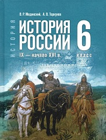

Учебник разработан в соответствии с актуальными требованиями Федерального государственного образовательного стандарта основного общего образования и Федеральной образовательной программы основного общего образования.
В учебнике освещены основные события истории России IX — начала XVI в., большое значение уделено вопросам интеграции событий отечественной и зарубежной истории. Представленные в учебнике вопросы и задания нацелены на изучение региональной истории, подготовку к промежуточной и итоговой аттестации. Значительное место в учебнике занимают материалы по истории духовной жизни общества, культуры и повседневности. Главным результатом изучения курса должно стать формирование у обучающихся целостной картины российской и мировой истории, понимание места России в мире, вклада её народов и культуры в общую историю, а также определение личностной позиции к прошлому и настоящему Отечества.
§ 1. Великое переселение народов. Восточная Европа и Северная Азия в 1-м тыс. н. э.
§ 2-3. Восточные славяне и их соседи
§ 4. Начало династии Рюриковичей
§ 5-6. Русь при Игоре, Ольге, Святославе
§ 7-8. Русь при Владимире Святом
§ 9. Расцвет Руси при Ярославе Мудром
§ 10-11. Наследники Ярослава Мудрого
§ 12. Русь при Владимире Мономахе
Итоги главы. Великое переселение народов на территории современной России. Государство Русь
§ 13. Политическая раздробленность Руси
§ 14-15. Владимиро-Суздальская земля
§ 19-20. Культура и быт в IX — начале XIII в.
Итоги главы. Русские земли в середине XII — начале XIII в.
§ 22-23. Натиск на русские земли с востока
§ 24-25. Отражение агрессии с запада
§ 26-27. Русские земли и Золотая Орда
§ 28-29. Русь и Великое княжество Литовское
§ 30. Северо-Восточная Русь в конце XIII — начале XIV в.
§ 32-33. Победа на Куликовом поле
Итоги главы. Русские земли в середине XIII — XIV в.
§ 34-35. Московское княжество в конце XIV — первой половине XV в.
§ 36-37. Иван III — государь всея Руси
§ 38-39. Российское государство и общество во второй половине XV в.
§ 40-41. Правление Василия III
§ 42-43. Культура во второй половине XIII — первой трети XVI в.